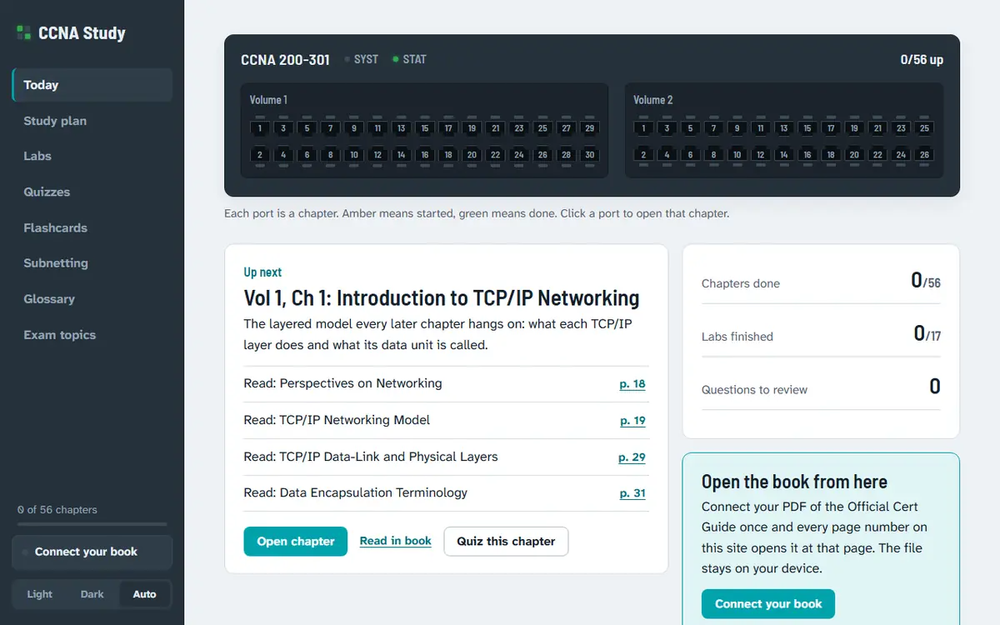

CCNA Study
Summary
CCNA Study is a study companion for the CCNA 200-301 (v1.1) exam, organized around the CCNA 200-301 Official Cert Guide Library. Its core is a Cisco IOS simulator I wrote from scratch in JavaScript, so the labs run in the browser with nothing to install. Around it sit a 56-chapter study plan, quizzes, flashcards, a subnetting trainer and an exam-topic tracker.
Problem
Networking is learned by typing commands and seeing what the network does, but a practice lab normally means installing a simulator. I wanted hands-on labs anyone could open in a browser, graded as you type, and tied to a study plan so that every chapter has a checklist, flashcards, a quiz and linked labs.
What I built
- 17 labs in a simulated Cisco CLI. Tasks check themselves off as you complete them.
- A study plan of 56 chapters in 15 parts, with a checklist per chapter (every book section with its printed page) and a week-by-week schedule from your hours per week.
- 225 original quiz questions tagged by chapter. Scoring 85% or better on a chapter checks it off in the plan.
- 196 original flashcards and glossary terms, a subnetting trainer with problems at three difficulty levels, and an exam-topics view showing which chapters cover each v1.1 topic.
- Connect your book. Each reader picks their own PDF. It is stored in that browser (IndexedDB), never uploaded, and every page number on the site opens it at that printed page.
How it works
The simulator lives in src/sim/ and is split by job:
engine.js: devices, cabling, terminals, syslog messages, ping and traceroute, SSH and Telnet, PC commands and task checks.cli.js: IOS modes, abbreviations,?help, Tab completion,noforms and every supported command.network.js: link state, DTP and trunks, EtherChannel, Rapid PVST+, VLAN segments, static and OSPF routing, HSRP, ACLs, NAT, DHCP, DHCP snooping, DAI and port security.show.js:showoutput formatted like IOS XE.
Each lab is plain data: a topology, starting configs, tasks (each with a check(api) function) and a solution. All study content is plain data too, so adding a question or a lab does not touch the app code. Progress is kept in the browser's localStorage, so each visitor tracks their own.

Evidence
- The site is live and the simulator, labs, quizzes and flashcards all run client-side.
- The counts above (56 chapters, 17 labs, 225 questions, 196 terms) are the figures in the repository's README, and the live site shows the 56 chapters and 17 labs on its Today screen.
- The book's chapter and section titles and page numbers are used only as references. All notes, questions, definitions and labs are original, and the PDF is never hosted.
What I'd do next
- Widen the simulator. A simulated CLI can only teach the commands and protocols it implements, so the supported list in
cli.jsandnetwork.jsis the boundary for any new lab. - More labs against the exam topics. The exam-topics view already shows coverage per chapter, which is where gaps show up.